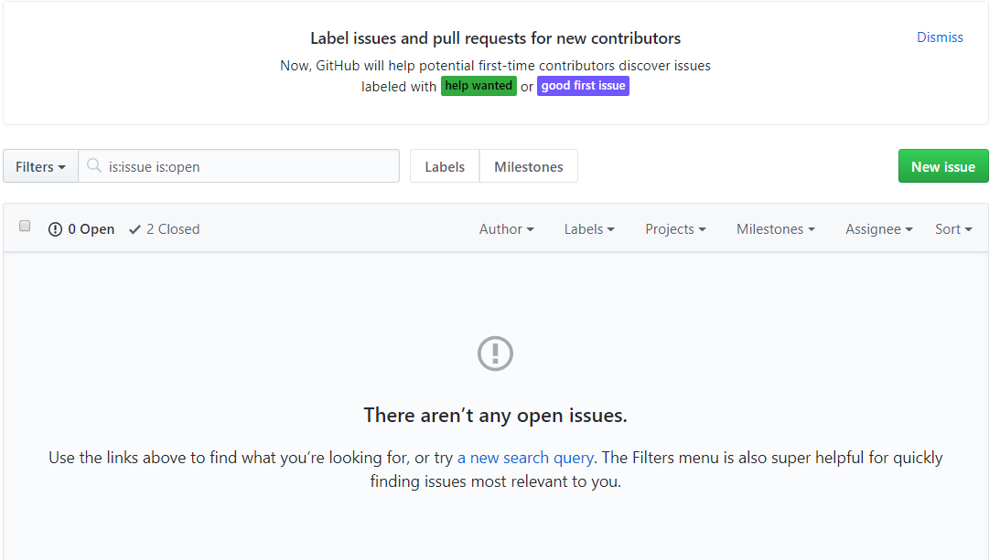
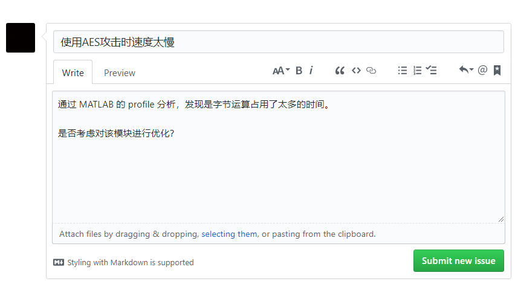

反馈和帮助
本工具箱目前（2018.03）尚处在早期开发和测试阶段，有很多功能还不完善。
如果你在使用过程中遇到问题，或者有新的想法，可以通过以下途径获得支持和帮助。
Contents
邮箱
开发者的邮箱为： zehan.yu@viewsources.com
我们会尽快回复你的反馈和疑问。
群聊
很多时候，发送邮件无法得到及时的答复，交流的效率也相对较低。 因此你可以加入 QQ 群以获得更快速和更详细的支持和帮助。
QQ 群：旁路分析技术交流群
群号：725662287
二维码：（是的，我们是如此的与时俱进）
GitHub
如果你在使用工具箱的过程中有新的需求，或者出现了问题或者错误（我相信这不仅会发生，而且会很频繁），最好的方法是到 GitHub 上提交一个 issue。
在 GitHub 上提交 issue，往往比在 QQ 群里询问开发者更有效。 原因在于，作为一个软件开发者，很可能会对千篇一律地教人们如何使用软件感到厌烦，但绝对不会在软件出错时坐视不管。
与此同时，GitHub 的 issue 对所有人可见，并且可以留存足够长的时间。 你在今天碰到的问题，很可能半年后的另外一个人也会碰到。或者相反地，你半年后碰到的某个问题，很可能半年前有人已经碰到过了。
如果问题的解决方案在第一时间以书面的形式记录了下来，不但能省去很多沟通的成本， 也能极大地提高解决问题的效率，更能造福后人，不用再走一遍弯路。 何乐而不为呢？
不过，你可能有点担心，因为你甚至都没听说过 GitHub，即使有所耳闻，也从来没有用过。 丝毫不用担心，只要简单几步，你就可以完成问题的提交。
首先，提交 GitHub issue 的地址是： https://github.com/Hansimov/scatool/issues
然后，点进去你将看到这样一个界面：

如果你还没有 GitHub 账号，可以注册一个（很快的），否则无法提交问题。如果你看到这里决定放弃了，那也没关系，懒人自有懒福。
如果你已经有了 GitHub 的账号，那么可以在上述页面中，点击右侧的“New Issue”，这时你会跳转到另一个页面。 此时，你就可以表述你的问题：

点击“Submit new issue”，即可完成问题的提交。
不过既然你已经看到这里了，一定不介意再多看两句。
一个好的提问，应当尽可能提供问题出现时的环境和细节，这有利于开发者和别的使用者更好地定位问题的原因。
此外，在提问之前，最好能够搜索一下，是否已经有类似的问题，避免重复。
当然，好的提问还需要具备很多其他的因素，不过只要遵循上面提到的两点，就已经足够了。
最后，希望这个工具箱能够对你有所帮助。